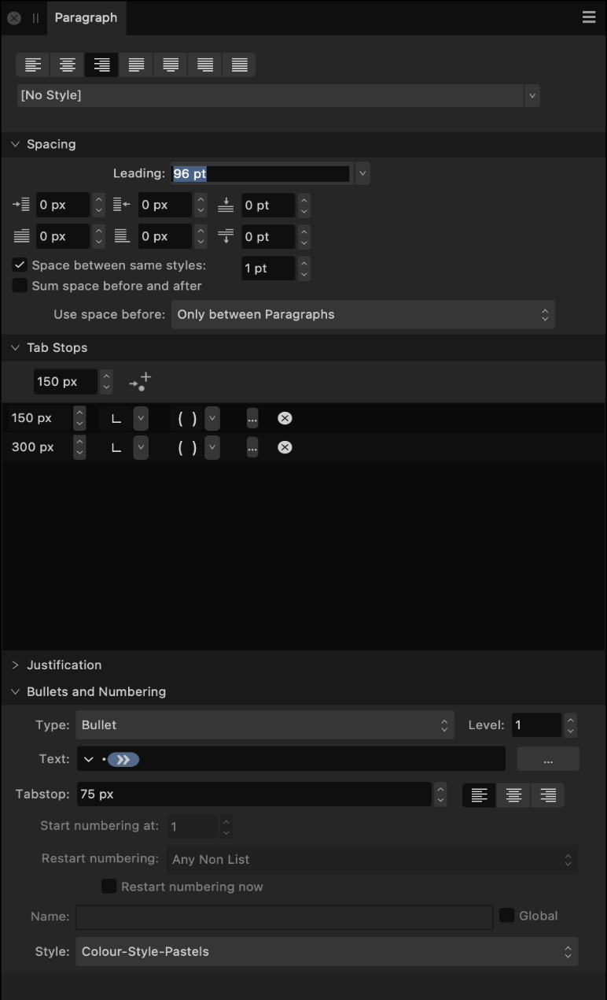

About the Paragraph panel
The Paragraph panel is unique in providing the ability to:
- Control the amount of vertical space between paragraphs.
- Apply left and right indentations as well as indents for first lines only.
- Create multiple tab stops set at different distances—giving you the ability to have irregular spacing when tapping several times.
- Adjust the behavior of justified text—giving you control over how the app calculates spacing between letters and words to allow text to be flush along both left and right margins.

The following panel options are available:
 Left Align—sets the paragraph alignment to adhere to the left margin.
Left Align—sets the paragraph alignment to adhere to the left margin. Center Align—sets the paragraph alignment to be equidistant from the left and right margins.
Center Align—sets the paragraph alignment to be equidistant from the left and right margins. Right Align—sets the paragraph alignment to adhere to the right margin.
Right Align—sets the paragraph alignment to adhere to the right margin. Justified Left—sets the paragraph alignment to both the left and right margins. The last line of a paragraph is left aligned.
Justified Left—sets the paragraph alignment to both the left and right margins. The last line of a paragraph is left aligned. Justified Center—as with Justified Left, however, the last line of a paragraph is center aligned.
Justified Center—as with Justified Left, however, the last line of a paragraph is center aligned. Justified Right—as with Justified Left, however, the last line of a paragraph is right aligned.
Justified Right—as with Justified Left, however, the last line of a paragraph is right aligned. Justified All—as with Justified Left, however, the last line of a paragraph is justified regardless of length (sometimes known as Force-Justified).
Justified All—as with Justified Left, however, the last line of a paragraph is justified regardless of length (sometimes known as Force-Justified).- Text Style—allows a paragraph text style to be applied to selected text.
Spacing
- Leading—controls the distance between text baselines (vertical gap between lines) within the paragraph. Select from the pop-up menu. Options include:
- Default—sets the line spacing to the font's default (i.e., single).
- Exactly—sets a fixed spacing (other text attributes are ignored for line spacing purposes). This can be adjusted using the presets in the pop-up menu.
- % Height—sets spacing based on a percentage of the text's size. This can be adjusted using the presets in the pop-up menu.
- At Least—sets a minimum spacing (actual line spacing may increase depending on other text attributes). This can be adjusted using the presets in the pop-up menu.
- Multiple—controls line spacing as a portion of the default. This can be adjusted using the presets in the pop-up menu.
 Left Indent—controls the left indent applied to the entire paragraph (excluding the first line).
Left Indent—controls the left indent applied to the entire paragraph (excluding the first line). Right Indent—controls the right indent applied to the entire paragraph.
Right Indent—controls the right indent applied to the entire paragraph. Space Before Paragraph—controls the vertical gap which precedes the paragraph. By default, this is not applied at the top of a column; this can be altered from the Use space before: pop-up menu.
Space Before Paragraph—controls the vertical gap which precedes the paragraph. By default, this is not applied at the top of a column; this can be altered from the Use space before: pop-up menu. First Line Indent—controls the indent applied to the first line of the paragraph.
First Line Indent—controls the indent applied to the first line of the paragraph. Last Line Outdent—controls the outdent applied to the last line of the paragraph.
Last Line Outdent—controls the outdent applied to the last line of the paragraph. Space After Paragraph—controls the vertical gap which succeeds the paragraph.
Space After Paragraph—controls the vertical gap which succeeds the paragraph.- Space between same styles—when this checkbox is ticked, you can manually set the spacing between paragraphs of the same style.
- Sum space before and after—when this checkbox is ticked, the sum of the Space Before Paragraph and the Space After Paragraph settings are used to determine spacing between paragraphs.
- Use space before:—controls when Space Before Paragraph settings are applied to the text. Select from the pop-up menu.
Tab Stops
- Default Tab Stops—controls the standard horizontal space added before a character when a tab () is inserted.
- Add New Tab Stop—adds an additional tab stop position.
- Delete Selected Tab Stop—removes the selected tab stop.
- Tab stop alignment—sets the alignment of the selected tab stop.


 Tab stop leader—sets the characters displayed which indicates the selected tab stop.
Tab stop leader—sets the characters displayed which indicates the selected tab stop.
Justification
 Minimum Word Spacing—sets the minimum gap allowed.
Minimum Word Spacing—sets the minimum gap allowed. Desired Word Spacing—sets the preferred gap between words.
Desired Word Spacing—sets the preferred gap between words. Maximum Word Spacing—sets the maximum gap allowed.
Maximum Word Spacing—sets the maximum gap allowed. Minimum Letter Spacing—sets the minimum tracking allowed.
Minimum Letter Spacing—sets the minimum tracking allowed. Desired Letter Spacing—sets the preferred tracking (spacing between letters) within words when a paragraph has a justified alignment.
Desired Letter Spacing—sets the preferred tracking (spacing between letters) within words when a paragraph has a justified alignment. Maximum Letter Spacing—sets the maximum tracking allowed.
Maximum Letter Spacing—sets the maximum tracking allowed.
Bullets and Numbering
- Type—select a type of bullet or numbering list from the pop-up menu.
- Level—enter a list level.
- Text—allows you to adjust the symbol(s) you wish to use for your list, as well as the spacing between the symbols and the text. Click on the downward arrow or the More button to browse additional symbols.
- Tab stop—adjust the distance text moves by in your list when the tab key is pressed.
- Alignment—select from Left Align Bullet/Number, Center Align Bullet/Number, or Right Align Bullet/Number. For the latter two options, First Line Indent must be greater than 0.
- Start numbering at—for numbered lists, you can adjust the number the list starts from.
- Restart numbering—for numbered lists, you can restart the numbering at certain points within the list.
- Restart numbering now—tick this checkbox to immediately restart the numbering from the current point within your list.
- Name—name your list.
- Global—tick this checkbox to make this list available to be used multiple times within your design.
- Style—select a style from the pop-up menu or click New to create a new style using the pop-up menu.